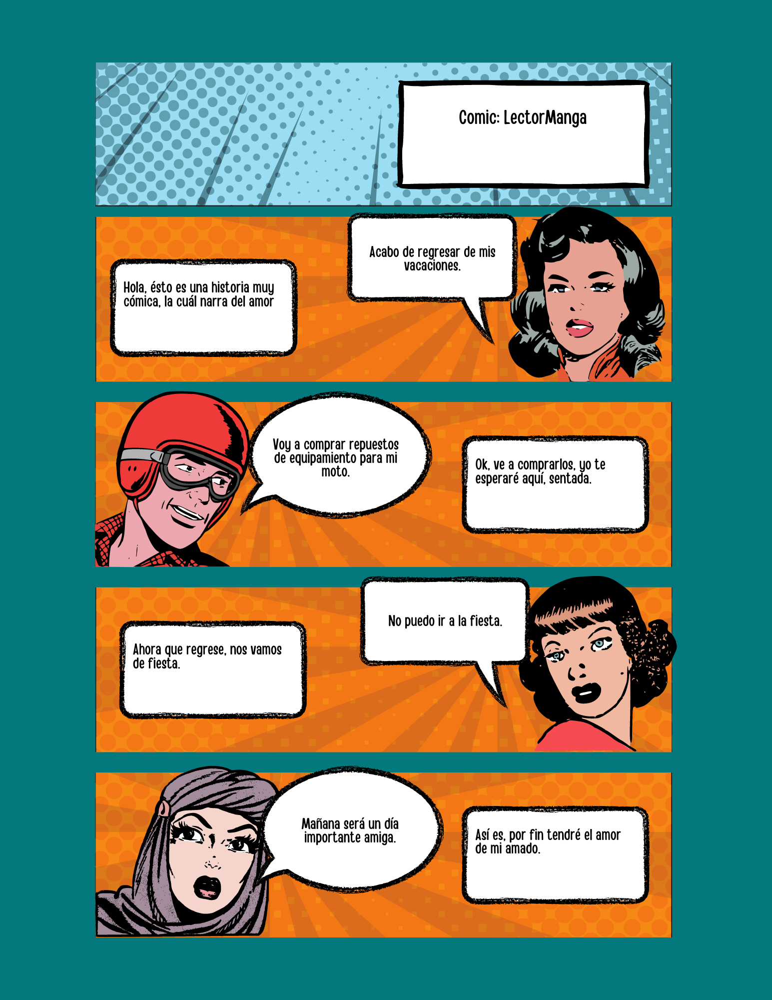

Disfruta leyendo

Era una noche clara y serena en un pequeño pueblo llamado Brillastrella. Una mujer llamada Aurora se encontraba sentada en la cima de una colina, sumergida en sus pensamientos. Las estrellas y la luna brillaban intensamente en el cielo oscuro, observando con atención hacia el vasto espacio. Aurora siempre había sentido una conexión especial con el universo. Desde muy joven, se sentaba en lugares altos para contemplar las estrellas y soñar con lo desconocido. Le parecía que cada estrella era un destello de perfección en el inmenso lienzo celeste. Aquella noche, mientras sus ojos se perdían en la inmensidad del firmamento, algo extraordinario sucedió. Las estrellas y la luna comenzaron a descender lentamente desde el cielo hasta posarse sobre el cuerpo de Aurora. Sintió una energía cálida y reconfortante envolviéndola mientras la magia se desarrollaba a su alrededor. Impresionada pero sin miedo, Aurora decidió recibir aquella experiencia con los brazos abiertos. Las estrellas y la luna se conectaron con ella, revelando una profunda sabiduría y conocimiento. Comenzaron a contarle historias sobre el origen del universo, los secretos de las estrellas y los tesoros escondidos en cada rincón del espacio. A medida que Aurora y las luminosas entidades cósmicas se fundían en una sola entidad, ella comprendió que esa unión era un recordatorio de su propia perfección interior. A pesar de todos los desafíos y los momentos oscuros que pudiera haber enfrentado en su vida, entendió que cada aspecto de su ser era un destello divino en el vasto tejido del universo. Con el paso del tiempo, Aurora se convirtió en una guía espiritual para su comunidad. Compartía las lecciones aprendidas en su encuentro con las estrellas y la luna, inspirando a otros a conectarse con su propia perfección interna y encontrar su propósito en el universo. La historia de Aurora resonó en los corazones de aquellos que la escucharon. A medida que el pueblo de Brillastrella abrazaba la creencia en su propia perfección, floreció una energía positiva que se extendió a través de cada rincón del lugar. La gente comenzó a descubrir sus talentos ocultos y a perseguir sus sueños con renovada pasión. La historia de Aurora y su encuentro con las estrellas y la luna nos enseña que todos somos parte de algo más grande y hermoso de lo que podemos imaginar. La perfección no reside en la ausencia de defectos, sino en la aceptación de quienes somos y la conexión con el universo que nos rodea.

En algún lugar remoto y misterioso, existía un joven llamado Gabriel, cuya pasión era la escalada. Pasaba la mayor parte de su tiempo explorando montañas y desafiando las alturas. Pero había una montaña en particular que siempre despertaba su curiosidad y anhelo: una montaña imponente y majestuosa que parecía tocar el cielo. Un día, decidido a enfrentar su mayor desafío, Gabriel se adentró en los terrenos desconocidos de la montaña. Mientras escalaba, una fuerte ventisca lo rodeó, desafiando su determinación y poniendo a prueba su habilidad. A pesar de las dificultades, Gabriel no se rindió y siguió subiendo sin miedo. Cuando finalmente alcanzó la cima, se quedó sin aliento frente a la visión que se abrió ante él. El cielo se extendía infinitamente ante sus ojos, imponente y lleno de misterio. Gabriel deseaba más que nunca poder tocarlo, sentir la magia y la vastedad del universo en sus propias manos. Con lágrimas de emoción en los ojos, Gabriel extendió su mano hacia el cielo, buscando de alguna manera conectarse con algo más allá de su existencia. Para su sorpresa, una ráfaga de viento cálido sopló desde el mismo corazón del cielo, llevando consigo una energía poderosa y un mensaje codificado. Intrigado y emocionado, Gabriel sintió que había un propósito más profundo detrás de su encuentro con la montaña y el cielo. Se propuso descifrar el mensaje oculto en la ráfaga de viento y emprender un viaje de autodescubrimiento. A medida que Gabriel se aventuraba en su travesía, se dio cuenta de que el destino tenía planes más grandes para él. El viento lo condujo a través de paisajes asombrosos y encuentros con personas llenas de sabiduría. Cada paso de su camino estaba marcado por señales enigmáticas y guías que lo guiaban hacia su verdadero propósito. Eventualmente, Gabriel llegó a un antiguo templo en la cima de una montaña sagrada. Allí, encontró a una anciana sabia que se había convertido en su guía espiritual. Ella le reveló el verdadero significado de su viaje y cómo su mano extendida hacia el cielo era un llamado al destino. La anciana le explicó que Gabriel estaba destinado a inspirar a otros a alcanzar sus sueños y elevarse hacia nuevos horizontes. Su conexión con el cielo era un símbolo de la búsqueda infinita de la grandeza humana y la capacidad de superar todas las barreras. Con un nuevo propósito, Gabriel regresó a su comunidad y compartió su mensaje de perseverancia, coraje y conexión con algo más grande. A medida que se extendía su motivación y sabiduría, las personas se sintieron inspiradas a perseguir sus propios sueños y mirar hacia el cielo en busca de respuestas. En cada mano extendida hacia el cielo, Gabriel encontró un destino interconectado, lleno de posibilidades y significado. Sabía que su camino había sido trazado por una fuerza divina y que su misión era ayudar a otros a descubrir su propio destino. La historia de Gabriel nos enseña que nuestras manos pueden ser el puente hacia nuestros sueños y el vínculo que nos une con algo más allá de lo tangible. Nuestro destino se encuentra en nuestra capacidad de enfrentar desafíos, escuchar las señales del universo y creer en nuestra propia grandeza.

La historia de dos almas que se encontraron en el momento más inesperado. Aunque el destino intentó separarlos una y otra vez, su amor siempre prevaleció. Juntos enfrentaron los desafíos y superaron las pruebas que la vida les puso en el camino. En cada momento difícil, juraron estar allí el uno para el otro, sin importar qué. Siempre estaré contigo, susurraba él mientras ella cerraba los ojos y sonreía, sabiendo que aquel compromiso era inquebrantable. En un pequeño pueblo costero, conocido por sus hermosos atardeceres y su encanto tranquilo, vivían dos almas perdidas en la rutina. María, una joven artista con sueños de expresar su creatividad al mundo entero, y Juan, un audaz escritor en busca de inspiración para plasmar sus ideas en papel. Un caluroso día de verano, el destino decidió cruzar sus caminos de la manera más inesperada. María paseaba por la playa, sumergida en sus pensamientos, cuando tropezó con una piedra y cayó al suelo. Juan, que casualmente caminaba por allí, acudió rápidamente en su ayuda. Sus manos se encontraron en aquel instante, y algo inexplicablemente mágico nació entre ellos. A medida que compartían sus sueños, temores y anhelos, María y Juan se dieron cuenta de que, pese a las diferencias en sus personalidades, se complementaban de una manera única. Juntos, se desafiaron a sí mismos a enfrentar los obstáculos que la vida les presentaba. Sin embargo, no todo fue un camino fácil para ellos. El destino, juguetón y travieso, intentó separarlos en varias ocasiones. Las circunstancias y las pruebas parecían conspirar en su contra, pero su amor nunca flaqueó. Juntos, desafiaron las adversidades y demostraron que su unión era más fuerte que cualquier obstáculo. En cada momento difícil, María y Juan se prometieron estar allí el uno para el otro, sin importar lo que sucediera. Cada noche, mientras los ojos de María se cerraban y una dulce sonrisa aparecía en sus labios, Juan le susurraba al oído: "Siempre estaré contigo", y sus palabras resonaban en su corazón, asegurándole que aquel compromiso era inquebrantable. El tiempo pasó, y su amor se volvió más profundo y sólido. Juntos, María y Juan dejaron su pequeño pueblo en busca de nuevos horizontes, llevando consigo la esencia misma de su amor. Viajaron por el mundo, explorando diferentes culturas y descubriendo la belleza en cada rincón. Y en cada nuevo amanecer, se recordaban mutuamente su amor eterno y su lealtad inquebrantable. Hoy en día, María sigue creando obras de arte que reflejan su amor y su conexión con el mundo, mientras que Juan escribe historias inspiradoras que tocan el corazón de quienes las leen. Su amor permanece como un faro de esperanza para todos aquellos que los conocen, demostrando que cuando el destino une a dos almas afines, ningún obstáculo es suficiente para apagar su amor ardiente. Y así, la historia de María y Juan, dos almas que se encontraron en el momento más inesperado, continúa siendo escrita en el lienzo de la vida, un testimonio eterno del poder del amor verdadero y de cómo juntos enfrentaron los desafíos y superaron todas las pruebas que la vida les puso en el camino.

Era una mañana soleada en el pequeño pueblo de Vallesol. Los habitantes iban y venían por las calles, realizando sus quehaceres diarios. En medio de todo ese bullicio, destacaba una persona singular: un hombre de mediana edad, alzando sus manos hacia el cielo, como si estuviera buscando algo o tratando de comunicarse con una fuerza superior. Este hombre misterioso se llamaba Lucas. Solía pasear por las calles todos los días, siempre con las manos en alto, desafiando la mirada perpleja de los habitantes del pueblo. Nadie sabía por qué hacía eso ni qué pretendía lograr, pero su actitud intrigaba a todos. Un día, mientras Lucas realizaba su rutina habitual, una hoja dorada descendió del cielo y aterrizó en su mano abierta. Los transeúntes se detuvieron, asombrados por esta inexplicable coincidencia. La hoja era hermosa y, a pesar de todos los esfuerzos, no pudieron encontrar una explicación lógica sobre cómo había llegado allí. Lucas, con una sonrisa en su rostro, observó detenidamente la hoja. Sentía una conexión inexplicable con ella. Le recordaba algo que había perdido hace mucho tiempo. Decidió llevarla a casa y comenzó a investigar en libros antiguos y cuentos de la región, en busca de alguna pista sobre su origen. Poco a poco, la presencia de Lucas y su hoja dorada se convirtieron en una leyenda local. Muchos habitantes del pueblo empezaron a cuestionarse si tal vez Lucas tenía alguna conexión especial con el universo, capaz de manifestar cosas inexplicables. Incluso los más escépticos empezaron a considerar que tal vez había algo más allá de lo que se podía ver a simple vista. Con el paso del tiempo, la hoja dorada se convirtió en símbolo de esperanza y enigma para los habitantes de Vallesol. Se decía que aquellos que miraran fijamente la hoja experimentarían una sensación de conexión con algo más grande que ellos mismos. Las personas comenzaron a visitar a Lucas, buscando respuestas y una experiencia similar. Un día, una niña llamada Isabella, quien había perdido a sus padres en un trágico accidente, se acercó a Lucas con lágrimas en sus ojos. Él la miró compasivamente y le ofreció la hoja dorada. Isabella la sostuvo en su mano y, en ese momento, sintió una calidez reconfortante que parecía envolverla. Supo que, de alguna manera, todo estaría bien y que sus padres siempre estarían cerca. A partir de ese momento, Lucas se convirtió en una fuente de inspiración y esperanza para el pueblo de Vallesol. Él y la hoja dorada se convirtieron en una leyenda que perduraría por generaciones. La moraleja de esta historia es que, a veces, hay cosas en el mundo que simplemente no podemos explicar con nuestra lógica limitada. Pero eso no significa que no podamos encontrar maravilla y significado en ellas. La hoja dorada y las manos alzadas de Lucas nos recuerdan que hay más en la vida de lo que podemos ver y entender, y que a veces, la única explicación necesaria es la conexión que sentimos en nuestro corazón.

Un amor eterno que empezó en la juventud, pero que jamás se extinguiría. Dos corazones unidos por la pasión y el cariño, prometidos a vivir una vida llena de felicidad. Aunque los años pasaran y las arrugas aparecieran, el sentimiento entre ellos nunca menguó. Siempre te amaré, murmuraba ella cada mañana mientras acariciaba su rostro cansado. El tiempo no podía borrar el amor que sentían el uno por el otro, porque su compromiso era amarse hasta el último suspiro. En pequeño pueblo pintoresco habitaban jóvenes enamorados. Su amor fue tan intenso y genuino que jur unirse en matrimonio yir una vida llena de dich y plenitud. Soñaron concluir un futuro juntos,o de risas,uras y complicidad. Con pasaban los años, pasión y el cariño entre ellos se fortalecía cada vez más. Las adversidades las pruebas que la vida presentaba, nunca dejaron que su amor se extinguiera siempre encontraban la manera de superar juntos obstáculo, recordando las promes que habían hecho en suventud. A medida el tiempo pasaba, sus cuer envejecían y lasugas aparecían, pero su amorecía inquebrant. Cada mañana, despertar, Sofía acariciaba el ro cansado de Alejandro y leurraba con ternura "Siempre te amaré". Esas palabras resonaban en el corazón de Alejandro y le recordaban que, a pesar de las marcas que el tiempo dejaba en sus rostros, el amor que sentían el uno por el otro nominuía en lo más mínimo. Juntos, enfrentaron los retos propios de la vejez, apoyándose mutuamente en cada paso del camino. Cada día, sus historias se entrelazaban aún más, compartiendo risas, lágrimas y los recuerdos de una vida juntos. Con cada adversidad, su amor se volvía más fuerte, alimentándose de la complicidad y la admiración mutua. El tiempo no podía borrar el amor eterno que existía entre ellos. Aunque los cuerpos se debilitaban y las memorias se volvían difusas, su compromiso de amarse hasta el último suspiro prevalecía. Cada caricia, cada palabra de amor y cada mirada profunda demostraban que su unión trascendía cualquier obstáculo terrenal. En el último capítulo de su historia, Alejandro y Sofía se encontraban sentados en el porche de su hogar, observando el atardecer que tanto amaban. Sus manos arrugadas se entrelazaban suavemente, simbolizando la conexión que habían cultivado a lo largo de los años. Mientras el sol se ocultaba en el horizonte, él le susurró con voz entrecortada: "Siempre estaré contigo, mi amor", y ella respondió con lágrimas de felicidad: "Y yo siempre te amaré". Así, en ese momento, rodeados de su amor y los recuerdos de una vida juntos, Alejandro cerró sus ojos por última vez, sabiendo que su amor duraría por toda la eternidad. Y Sofía, con el corazón lleno de gratitud y paz, se sintió agradecida por haber compartido una vida de amor inquebrantable. Su historia de amor trascendió el tiempo y el espacio, dejando un legado de inspiración y esperanza para las generaciones venideras.

Bajo el cálido sol del verano, sus caminos se cruzaron. Ella, una chica soñadora y llena de vida; él, un chico rebelde y aventurero. En aquel paraje paradisíaco, dieron rienda suelta a la pasión que los envolvía, sin pensar en el mañana. Sus caricias y sonrisas compartidas se convirtieron en recuerdos imborrables en sus corazones. Aunque el tiempo pasó y la distancia los separó, la historia de amor de verano siguió viva en sus mentes y corazones, recordándoles el amor y la felicidad que una vez compartieron. Ambos sabían que su conexión era especial desde el momento en que se encontraron. Cada momento juntos era mágico, explorando los rincones del paraíso que los rodeaba. Pasaron días enteros bajo el cálido sol del verano, riendo, hablando y compartiendo sueños mientras se sumergían en aguas cristalinas y paseaban por la arena dorada de la playa. Sin embargo, también sabían que su romance de verano tenía fecha de vencimiento. La realidad los esperaba al final de la estación, con responsabilidades, compromisos y obligaciones que inevitablemente los separarían. Aun así, decidieron aprovechar cada instante que tenían juntos, sin pensar en el mañana. Las noches se volvieron cómplices de su pasión desbordante. Se abrazaban bajo la luz de la luna, compartiendo secretos y promesas, creando un vínculo inquebrantable. Juntos, descubrieron la belleza de la libertad y el poder del amor. Cuando llegó el día de la despedida, se prometieron que su historia no se desvanecería. Mantendrían vivo su amor, aunque los kilómetros fueran un desafío. Intercambiaron cartas apasionadas y llamadas telefónicas llenas de susurros de amor. A pesar de la distancia, encontraron consuelo en la certeza de que siempre llevarían al otro en sus pensamientos y en sus corazones. Los años pasaron y sus vidas tomaron diferentes rumbos. Ambos experimentaron nuevas aventuras, lucharon contra obstáculos y encontraron el amor en otros lugares. Pero ninguno de ellos pudo olvidar aquel verano mágico, donde sus corazones se encontraron en un amor efímero pero intenso. A medida que el tiempo avanzaba, sus caminos volvieron a cruzarse un día inesperado. Los ojos se encontraron y, en ese breve instante, todo el pasado resurgió. Compartieron sonrisas nostálgicas y reconectaron, recordando los momentos compartidos y el amor que una vez los unió. Aunque la vida los había transformado, la historia de su amor de verano nunca se desvaneció por completo. Se dieron cuenta de que, a pesar de las experiencias vividas, sus corazones siempre tendrían un lugar especial el uno para el otro. Ahora, mientras disfrutan de la calidez del sol del verano, saben que la vida es impredecible, pero están decididos a escribir un nuevo capítulo juntos. Han aprendido que el amor puede superar cualquier obstáculo y que los recuerdos compartidos y la pasión que los une nunca desaparecerán. Bajo el cálido sol del verano, sus caminos se cruzaron una vez más, y esta vez están decididos a construir un futuro juntos, lleno de risas, aventuras y amor eterno.

Un amor sincero y desinteresado, juramentado para estar juntos en cada etapa de la vida. Él sabía que ella tenía miedos y heridas del pasado, pero él estaba dispuesto a sanarlas y protegerla de todo mal. Nunca te dejaré, lo prometo, le decía él mientras abrazaba fuertemente a su amada. En su mirada se encontraba la seguridad de que sus promesas jamás serían rotas, y en su corazón estaba grabada la lealtad y el amor eterno. Juntos enfrentaron los desafíos y construyeron un futuro sólido, recordándose mutuamente cada día que su amor era inquebrantable. A medida que los años pasaban, su amor se fortalecía aún más. Cada obstáculo que encontraban en el camino, lo enfrentaban juntos, apoyándose mutuamente en los momentos difíciles y celebrando los triunfos compartidos. Él se convirtió en su roca, en su refugio seguro donde podía encontrar consuelo y ser ella misma sin temor. Él conocía cada uno de sus miedos y heridas, y se había convertido en su protector. Con paciencia y comprensión, él la ayudó a sanar heridas profundas del pasado, eliminando las barreras que le impedían amar plenamente. Despertaba en ella un amor incondicional y una confianza renovada en sí misma. Cada día, él reafirmaba su compromiso con ella, recordándole con sus palabras y acciones que nunca la abandonaría. En momentos de oscuridad, él era su luz, su guía para encontrar el camino de regreso a la felicidad. Su amor era tan sólido y profundo que incluso los peores momentos de incertidumbre se desvanecían en su presencia. Juntos, forjaron un futuro sólido lleno de risas, aventuras y un amor que trascendía el tiempo. Construyeron una vida llena de sueños compartidos, apoyándose mutuamente en cada paso del camino. Las promesas que se hicieron en aquellos primeros momentos de amor sincero y desinteresado se mantuvieron firmes, y su vínculo se hizo aún más profundo con cada desafío superado. A medida que los años pasaban, en sus miradas se encontraba la misma seguridad y determinación de siempre. Sabían que, pase lo que pase, su amor era inquebrantable y estarían juntos en cada etapa de la vida. Compartían risas, abrazos y besos que transmitían el amor eterno que los unía. El tiempo y las pruebas solo habían fortalecido su conexión, demostrando que su amor era verdadero y perdurable. En cada gesto y palabra, se recordaban mutuamente que su amor era un regalo valioso que debían cuidar y apreciar. Así, envueltos en un amor sincero y desinteresado, continuaron su viaje juntos, enfrentando todo lo que la vida les deparaba con la certeza de que, al final del día, siempre tendrían el uno al otro.